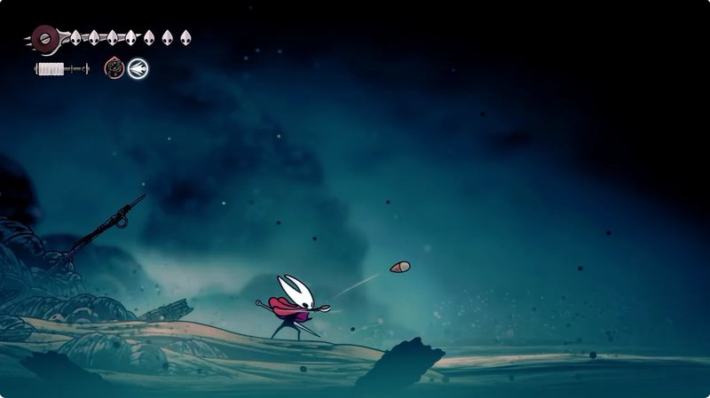

OpenAI就商业秘密对苹果提起反诉
OpenAI countersues Apple over trade secrets as AI race heats up
半岛电视台报道，OpenAI就商业秘密对苹果提起反诉，正值人工智能竞赛升温
半岛电视台 · 11-28 04:40
看原文
OpenAI countersues Apple over trade secrets as AI race heats up
半岛电视台报道，OpenAI就商业秘密对苹果提起反诉，正值人工智能竞赛升温
财新报道，苹果应用商店因色情内容下架MiniMax的聊天应用Talkie；报道称其AI生成角色会向未成年人发送带有色情化信息，该应用虽标为18岁以上但年龄核验宽松，谷歌应用商店未受影响
澎湃报道，复旦大学11月27日宣布面向全校师生免费开放大模型API服务，每人每周初始配额为1亿Token；上海已有多所高校向师生提供免费词元，额度与路径各不相同
IT之家报道，微信开源WeMM-Ecom多模态基础模型家族，已深度服务微信电商数百个业务流程，可用于商品审核、直播画面识别等，论文、代码和模型已公开
量子位报道，腾讯混元发布面向专业3D创作的Hy3D 3.6，优化高模表面、结构与细节，团队表示竞争重点正从“能看”转向“能用”，并提供创作引擎免费体验和腾讯云API
Taking Trainium3 to the Track: Generating Videos with LTX-2.5
Hugging Face发布博文，介绍如何使用AWS Trainium3运行LTX-2.5模型生成视频，供开发者参考芯片与视频生成模型的组合实践
IT之家报道，为防止考生利用人工智能作弊，韩国学校正在抢购金属探测器
Introducing the llama.cpp benchmark dashboard for AMD Ryzen and Radeon
Hugging Face介绍面向AMD Ryzen（锐龙）和Radeon的llama.cpp基准测试看板，方便开发者比较本地推理性能
IT之家报道，国家网信办等十一部门联合公布《分布式数字身份互通互认应用规定》，将于2027年3月1日起施行
Intel faced a choice: Give Trump 10% or face the consequences
Ars Technica报道，英特尔面临向特朗普让出10%股份的要求，否则将承担后果
IT之家报道，小米澎程OTA 1.20开启全量推送，新增iPhone数字钥匙功能，并将城区领航辅助解锁门槛降至100公里
You might lose your Oura health data if you’re still using an old Android phone
The Verge报道，Oura将于12月8日停止支持Android 11，未升级的用户可能丢失历史健康数据
IT之家报道，我国自主聚变能源解决方案发布工程初步规划，拟分两个阶段实施
中新网报道，中国成功发射遥感五十号04星，用于国土普查、农作物估产和防灾减灾
Allstate has been suffering an outage since Monday
The Verge报道，美国保险公司Allstate自周一以来系统故障持续，影响用户服务
US approves SpaceX plan to send a million data satellites to space
BBC报道，美国批准SpaceX向太空发射一百万颗数据卫星的计划
澎湃报道，央行发布人民币存贷款利率管理新规，取消贷款罚息利率上下限，改由金融机构与借款人协商确定，并预计罚息利率总体将有所下行
S&P cuts France outlook to negative
金融时报报道，标普将法国展望下调至负面
中新网报道，中国央行将大额存单认购起点金额下调一半，降低普通投资人参与门槛
财新报道，美团外卖业务现拐点，收入超预期、利润同比转正
IT之家报道，恒大汽车称香港联交所上市委员会决定取消公司的上市地位，最快12月14日摘牌
US tech stocks rise in latest market swing
金融时报报道，美国科技股在最新市场波动中上涨
UK to pay 'participation' fee to deliver EU deals
BBC报道，英国将支付“参与费”（participation fee）以落实与欧盟的协议
Millions of people to see average monthly mortgage payments rise by £100
BBC报道，数百万人的平均每月按揭还款将增加100英镑
IT之家报道，上海地铁计次票12月1日启用，激活日及之后30个自然日内有效，折合单次最低4.33元
IT之家报道，网信办称我国超64%成年公民具备初级及以上数字素养与技能，近半数具备人工智能素养
中新网报道，山东通报基建项目底座缺陷调查结果，问题属实，追责17人
中新网报道，今年以来全国共办理生态环境行政处罚案件3.8万余件
Zelensky tells BBC US too focused on Middle East and not pushing Russia hard enough
BBC报道，乌克兰总统泽连斯基接受BBC采访时称，美国过于关注中东，对俄罗斯施压力度不够
Canada's top court largely upholds Quebec ban on religious symbols for public servants
BBC报道，加拿大最高法院大体维持魁北克对公职人员佩戴宗教标志的禁令
US military says it disabled merchant ship trying to breach Iran blockade
半岛电视台报道，美军称已使一艘试图突破伊朗封锁的商船丧失行动能力
Putin unveils new Russian nuclear-powered submarine with hypersonic weapons
半岛电视台报道，普京亮相俄罗斯新型核动力潜艇，并称其配备高超声速武器
中新网报道，《网络视听领域版权保护行业自律公约》发布，推动行业加强版权保护自律
IT之家报道，有团队探索用人工智能在大银幕“复活”李小龙，其女儿李香凝称这一尝试像是在走钢丝
中新网报道，首只在印尼出生的大熊猫“里奥”迎来周岁
中新网报道，中国国家博物馆馆藏珠玉珍品在成都展出
'I Hope We Will Survive' — Denis Villeneuve Was 'Deeply Disappointed' by Disney's Decision to Release Avengers: Doomsday on the Same Day as Dune: Part Three
IGN报道，导演丹尼斯·维伦纽夫对迪士尼将《复仇者联盟：毁灭之日》（Avengers: Doomsday）与《沙丘：第三部》安排同日上映深感失望
Gérard Depardieu to stand trial for alleged rape of actress in 2018, court rules
BBC报道，法院裁定热拉尔·德帕迪约（Gérard Depardieu）须就2018年涉嫌强奸一名女演员一案出庭受审
Veruschka: Striking images of one of the first supermodels, who has died aged 87
BBC报道，早期超级模特之一维鲁施卡（Veruschka）去世，享年87岁

国际热门Hollow Knight: Silksong - Sea of Sorrow Launch Trailer Finally Confirms Release Date, Teases Fishing
IGN报道，《空洞骑士：丝之歌》（Hollow Knight: Silksong）首个大型资料片Sea of Sorrow（悲叹之海）发布预告并确认发售日，预告中还出现钓鱼玩法
中新网报道，北京首次举办游戏年会，集中启动三项重点产业项目
Digital Extremes says Warframe's imminent Tau update is practically big enough to be a sequel as it reveals new details, including dog walking
Eurogamer报道，Digital Extremes称《Warframe》即将到来的Tau更新体量几乎相当于一部续作，并公布包括遛狗在内的新细节
Marvelous, developer of the Story of Seasons series, opens up voluntary redundancy scheme as it seeks to reduce headcount by 65 employees
Eurogamer报道，牧场物语系列开发商Marvelous推出自愿离职方案，寻求减少65名员工
GTA 6 crashes into top end of music chart after its record launch
BBC报道，《GTA6》（Grand Theft Auto VI）在创纪录发售后冲上音乐榜前列